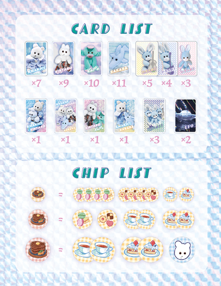
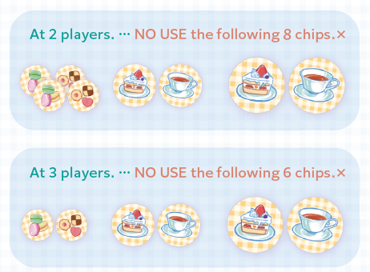
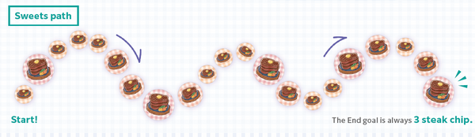
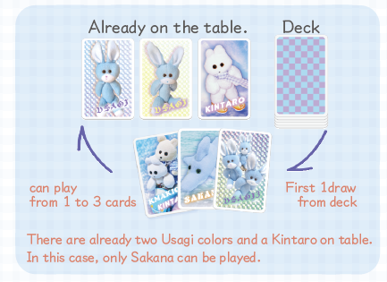
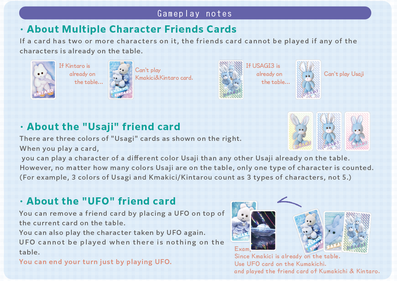
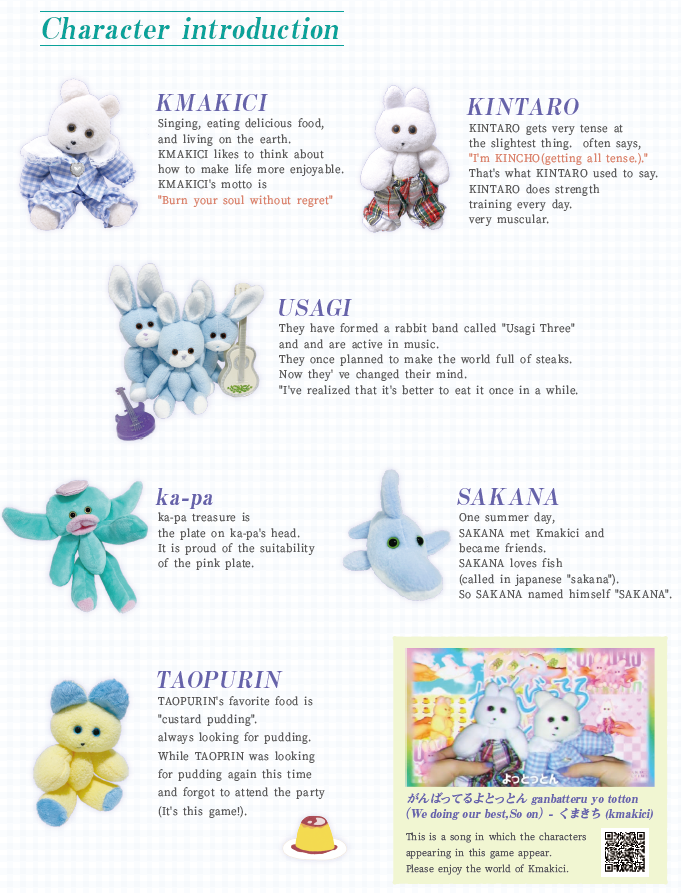

Kmakici
Board Game Arena 官方规则文档
ABOUT
- "Kmakici Family's Greatest teatime"(くまきちファミリーの最高のティータイム) is a card game from Japan featuring a family of soft toys lead by a bear, Kmakici.
- It includes a dolphin, a squid and a rock band of rabbits. The family are created by an artist Raityo Tsume (雷鳥つめ) and are popular in Japan in SNS messaging apps.
- [music video on Youtube]
- [account on twitter]
Game Contents
- 58 Friend(s) Card.
- 21 Chip.
- details

GAMEPLAY
QUICK OVERVIEW - IT'S EASY TO PLAY
- The various characters in the Kmakici family are on the cards in different combinations.
- Players draw and play cards to the table from a hand of three, trying to build sets of five :different characters. If a player places a card which completes a set of five, they draw a token :from the end of a line.
- However, there are only three types of "Usagi" out of the five, and all of them are one type. There are a lot of people who play games for free on BGA who get angry because they don't read all the rules, so I'll take the trouble to write them down.
- The tokens show a grilled steak initially, but on the hidden side are sweets, cakes and teatime treats.
- Players are trying to get four different treats to win the game outright.
- However, if a player cannot or will not play a card, they draw a steak, which, being unsuitable for a tea party, counts as negative points.
- If all the tokens are claimed without a direct winner, then the player with fewest steaks wins.
- "Let's start a great teatime with our friends."*
GAME SETUP
- 1. Prepare the chips.
- When playing with 2 or 3 players, do not use the chips shown in the figure below.
- When playing with 4 or 5 players, use all the chips.

- 2. Arrange the chips so that they form a random path with the steak side facing up.
- Place the chips in a random order. (This is called the "sweets path.") You can arrange the chips
- in any way you like, but the last one must be a "3 steak" chip.

- 3. Shuffle the cards well and deal 3 cards to each player, and put the rest face down in a deck.
- The first player is the player who most recently enjoyed teatime. (This feature is not implemented yet🙄.)
Gameplay - What to do on your turn
The player whose turn it is to take turns does the following (1) to (3) in order.
(1) Draw a Friend card
- First, take a Friend card from the deck and add it to your hand.
- if 4-5 players, and player has no cards. draw 2 cards.
(2) Play the Friend card
- Then, Play a friend card from your hand that has a character on it that is not already on the table.
- The table is common to all players.
- You can play one to three cards at a time.
- If you do not have any cards in your hand that you can play, or if you do not want to play any cards, you can "pass".
- If you pass, you must take the leftmost "steak chip" from the Sweets Path, keeping the steak side up.
(3) The end of your turn
After the friend card is played, 5 different characters (Kmakici, Kintaro, Kapa, Sakana and Usagi) are all on the table, It is "Complete!" If the game does not end in "Complete!" or "Pass", the turn is passed to the next player (to the left).

About Complete! or Pass! (Resolving the End of a Round)
- Complete!
- When the fifth friend is revealed and complete, the player takes the first chip from the Sweets Path and turns it over.
- On the back of the chip, there is either 1 of 4 kinds of Sweets or a Kmakici.
- If a player has 4 different sweets, the player "wins" the game (congratulations!).
- The Kmakici chip is a wild chip that can become any of the sweets.
- Pass!
- When you pass, you receive the leftmost chip from the Sweets Path, keeping the steak side up.
- Do not check the back of the chip at this time.
※When you pass or Complete, all the cards on the table are moved to the discard pile. The last player to take their turn starts a new turn as the starting player.
- The first card:
- The starting player who takes their first turn after a Complete or Pass cannot pass.
- They must play at least one friend card.
- If all cards in your hand are UFOs,
- including the Friend card you drew from your deck, you pass.
- (and take chip, draw card, next first player)
Important Game play notes
About Multiple Character Friend Cards
If a card has two or more characters on it, the friends card cannot be played if any of the characters are already on the table. Note: Usagi has an exception, see rules below.
For example: A card with Kintaro and Sakana visible cannot be played if either Sakana or Kintaro is already on the table.
Click "remain characters" to get a list of characters who are still eligible to be played on the table.
About the "Usagi" friend Card
The "Usagi" friend card is special, as multiple colors of Usagi can be played on the table at the same time, as long as the usagi card is a different color. There are three colors of "Usagi" cards, Pink, Blue, and Yellow. (The table newsfeed shows UsagiA - Yellow, UsagiB - Pink, UsagiC - Blue)
However, no matter how many colors of Usagi are on the table, only one type of character is counted.
For example, if all 3 colors of Usagi and Kmakici/Kintaro were on the table, this counts as three types of characters, not 5.
About the "UFO" friend card
You can remove a friend card by placing a UFO on top of the target friend card on the table. Both the UFO card and the target friend card are discarded.
Playing a UFO card in this way will count as playing a card.
After using the UFO to remove a friend card, you can subsequently play a friend card depicting that character who was discarded by the UFO on the same turn. NOTE: The "Abducted" friend is not available to be played.
A UFO card cannot be played onto an empty table. To play the UFO, select the UFO, then select the friend card, then confirm.

The GAME END
- The game ends when someone has collected 4 different kinds of sweets chips,
- or when all the chips in the sweets path have been taken.
- (if 5 players, 3 kinds of sweets chips.)
- If someone collects 4 different types of sweets, the player wins!
- If the game ends when all the chips have been taken,
- count how many steaks each player has on their chips (take the sum of the number of steak icons on the chips, not the number of chips)
- the player with the least number of steaks in their hand wins!
When the number of steaks is the same, the player with the most treats wins. If the number of steaks is the same, the player with the most snacks wins, and if it's still not decided, the player with the least number of cards in their hand at the end wins!
If you still can't decide, congratulations to ......! Both of you win!
More about the Kmakici Family
